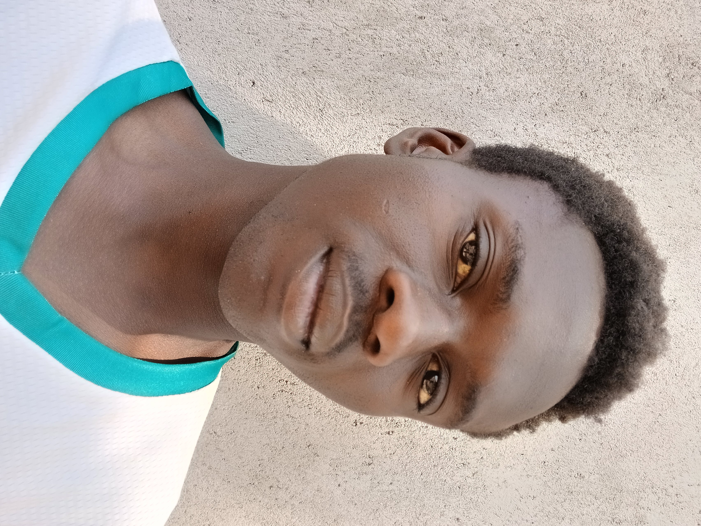
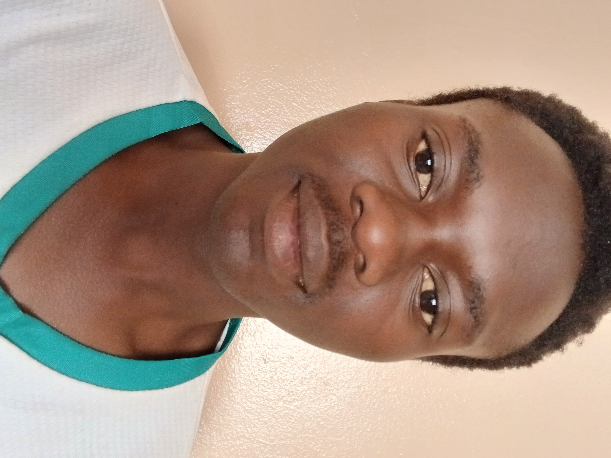
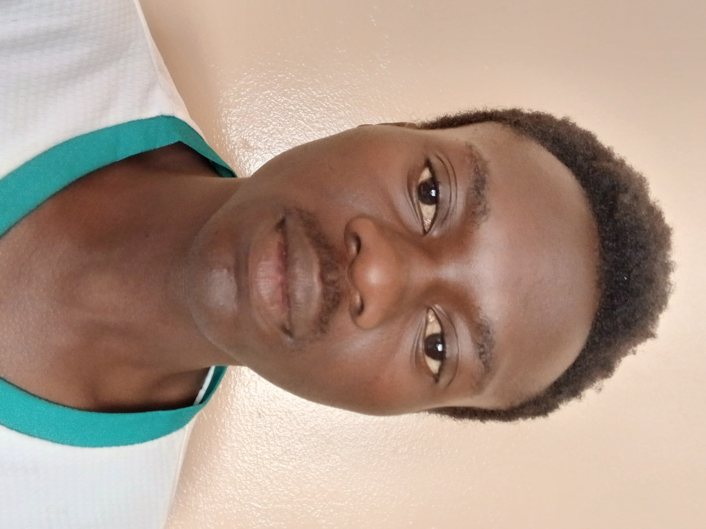

About Me
My Hobbies
- playing video games
- watching horror movies
- watching the UEFA cahmpions league
My Learning Plan
- Complete all ICT251 lab activities and submit them on time.
- Practise HTML and CSS for at least one hour every day.
- Build two small personal projects by the end of the semester.
| Day | Topic | Practice Task |
|---|---|---|
| Monday | HTML Structure | Build a simple page with semantic tags |
| Wednesday | CSS Styling | Style a page with colors and fonts |
| Friday | Media & Forms | Add images, video, and a form |
My Photos



My Media
Self-Introduction Video
Written summary: In this video, I introduce myself, state my programme, and explain that I hope to learn Ethical Hacking in this course.
Audio: My Hobby
In this recording, I describe one of my hobbies and why I enjoy it.